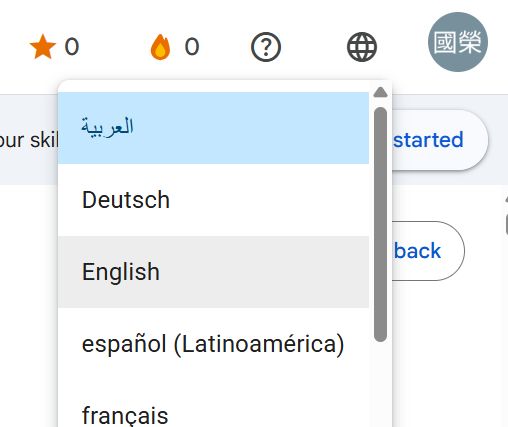
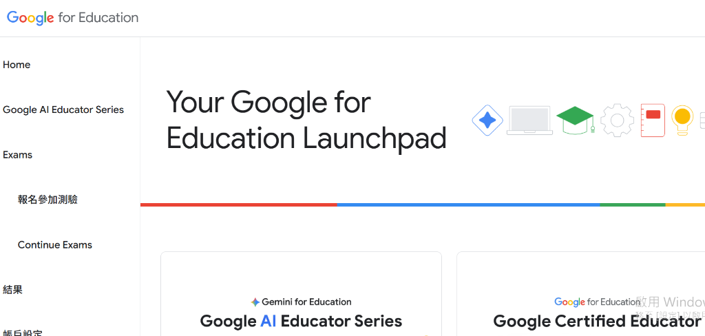
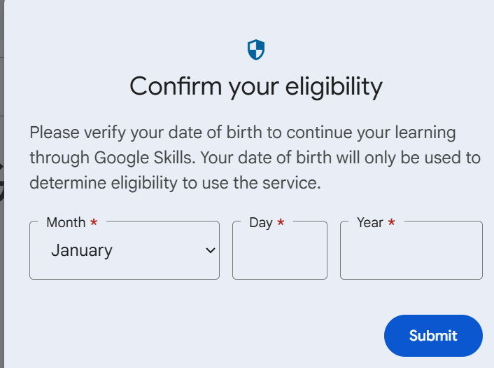
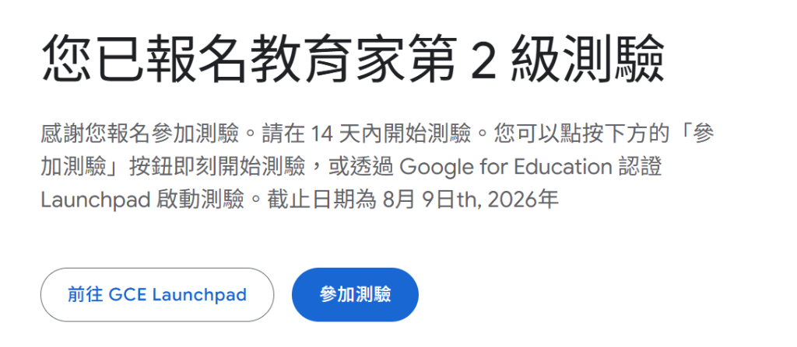
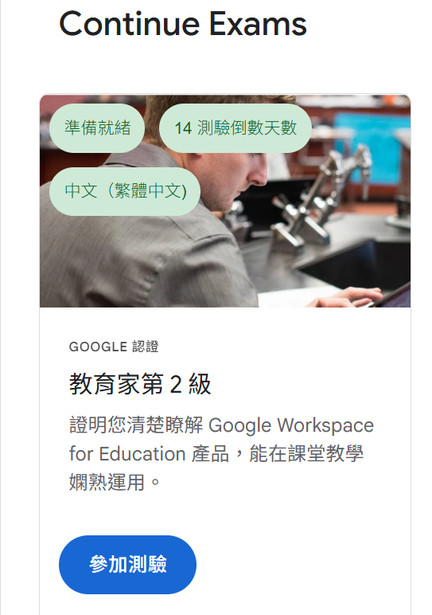
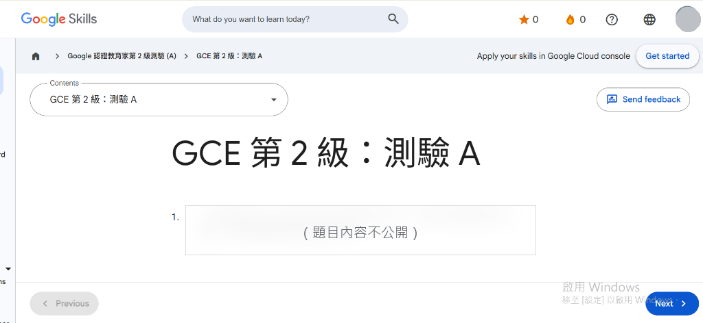

📋 Google Certified Educator Level 2 官方報名 5 大步驟與控制台導覽
官方報名連結：https://educertifications.google/registration/2?lang=zh-TW
🌐 考場超級祕技：點擊右上角 🌐 圖示隨時切換繁體中文與英文！
進行正式測驗時，若遇到翻譯較為彆扭的題目，點擊畫面右上角的 🌐 地球圖示即可彈出語系選單，隨時切換成 English 核對原版專有名詞，雙向切換不會影響答題時間與結果！

▲ 圖 0-1：測驗介面右上角 🌐 語言隨時切換下拉選單實景
📚 官方認證測驗架構剖析：180 分鐘 ‧ 25 題教學情境實務測驗
Google Certified Educator Level 2 考試採全面情境導向題型，評量教師在各項 Google 教育工具中的高階應用與最佳解法選擇：
⏱️ 考試時間與題數
共 180 分鐘（3 小時），包含 25 道核心實務情境題（單選題與複選題）。
🛠️ 考核工具範圍
涵蓋 Classroom、Gmail、Meet、Drive/Docs/Sheets/Slides/Sites、Forms、Calendar、YouTube、Keep、Earth 等全套進階整合。
🖥️ GCE Launchpad 認證控制台介面導覽

▲ 圖 4-0：Your Google for Education Launchpad 認證儀表板實景介面
▶️ Continue Exams (繼續測驗)
查看已報名且在 14 天效期內的測驗，隨時點擊啟動進行 180 分鐘應試。
📊 結果 (Results & Certificates)
查看歷次測驗成績，考取後在此下載 3 年有效的官方電子證書與數位徽章。
STEP 1
前往官方認證平台、登入 Google 帳號與出生年月日資格驗證 【官方實景】
點選「登入 / Sign In」，使用您常用且能正常收發郵件的個人或學校 Google 帳號登入。首次登入或報名時，系統會彈出 Confirm your eligibility (出生年月日資格驗證) 視窗：

▲ 圖 1-0：Confirm your eligibility 出生年月日資格驗證彈窗實景 (填寫月 Month / 日 Day / 年 Year 後點選 Submit 提交)
STEP 2
選擇「Google Certified Educator Level 2」與語言
在認證列表中找到 Level 2 項目點選報名，並選擇試題語言為「繁體中文」或「英文」。
STEP 3
免費報名與確認開通（官方全面免費 $0）
目前 Google 官方認證平台已開放免費報名（$0 免付費）！點選「報名 / Register」後即可直接確認開通測驗，無需輸入信用卡刷卡或購買兌換碼。
STEP 4
報名完成畫面與啟動測驗 【官方實景】
報名或兌換成功後，畫面會顯示：「您已報名教育家第 2 級測驗」！

▲ 圖 4-1：報名成功官方實景畫面 — 提示 14 天內開始測驗，提供「參加測驗」與「前往 GCE Launchpad」按鈕
STEP 5
前往 Continue Exams 啟動測驗與正式測驗畫面 【官方實景】
在 Launchpad 點選「Continue Exams」即可看到您已準備就緒的測驗卡片：

▲ 圖 4-2：Continue Exams 測驗啟動卡片實景 — 顯示「準備就緒」、「14 測驗倒數天數」、「中文 (繁體中文)」與藍色「參加測驗」啟動按鈕
點擊「參加測驗」後即可跳轉開通 180 分鐘正式試題畫面（GCE 第 2 級：測驗 A）：

▲ 圖 4-3：GCE 第 2 級測驗 A 正式測驗介面實景 — 正體中文實務情境題目與 Next / Previous 答題導覽按鈕
⚠️ 官方補考冷卻時間規定 (Retake Policy)
• 第一次未通過：需等待 14 天方可再次報名補考。
• 第二次未通過：需等待 60 天方可補考。
• 第三次未通過：需等待 1 年方可補考。